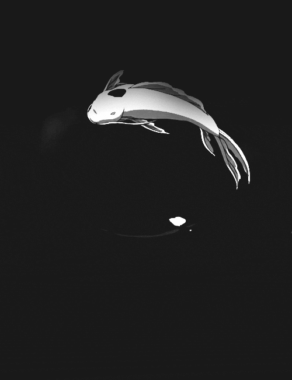

Welcome
Dec. 21, 2019

I'm Yin.
Yin, despite being the dark side of the yin-yang symbol, is "inactive" energy. It's not just dark and cold in the shadows, but also femininity, and the dark of the night sky. Yin is the calmly flowing water in the stream, and the soft music in the background.
Yin also symbolizes the earth, and shadows. I chose to keep this platform annonymous, and that will allow me to feel more free in sharing information and my opinion.